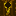

Cambium Wiki
The First Harvest
Your goal is to move away from mining and toward cultivation. Here is how to set up your first Solar Digester .
Step 1: The Digester
Crafting a Solar Digester requires standard wood and iron components. Once crafted, place it under direct sunlight.
- Note: The Digester will not function if the sky is obstructed.
Step 2: Fueling the Process
The Digester does not burn coal. It "digests" organic matter using solar energy.
- Open the GUI.
- Insert Logs, Saplings, or Leaves into the input slot.
- Wait for the internal buffer to fill.
Step 3: Harvesting Byproducts
As the Digester breaks down matter, it has a chance to produce Organic Ash. This is not fuel—it is a nutrient base.
- Collect at least 8 Organic Ash.
Step 4: Mineral Soil
Combine your Organic Ash with Dirt to create Mineral Soil.
- Why do I need this? Resource Trees(like Iron or Gold) cannot survive on regular dirt. They require the nutrient density of Mineral Soil
 to root.
to root.
Step 5: Planting
Plant your first Iron Resource Sapling on the Mineral Soil. Ensure it has light. Watch it grow, and harvest the Iron Fruit when mature.
Last updated: March 17, 2026